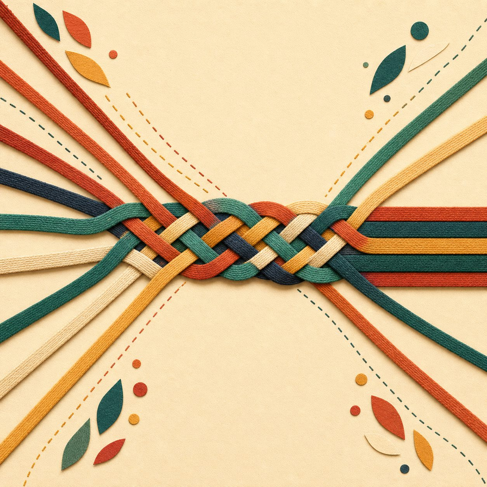
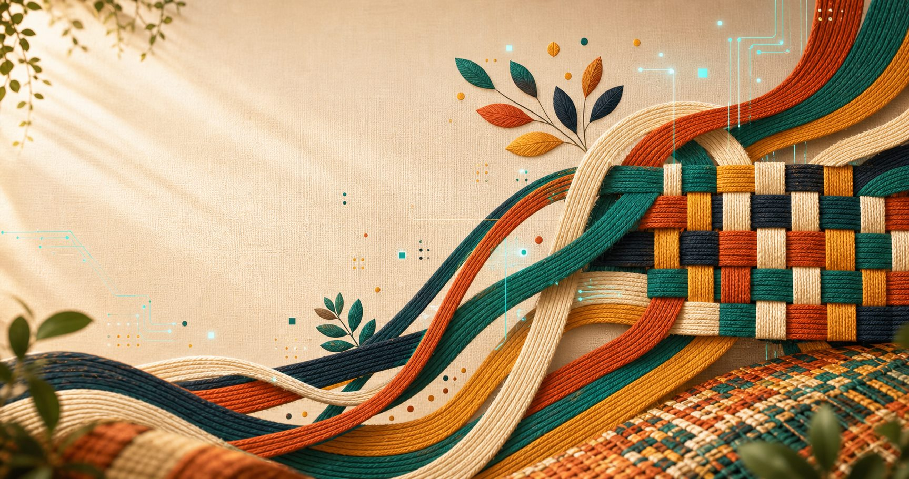
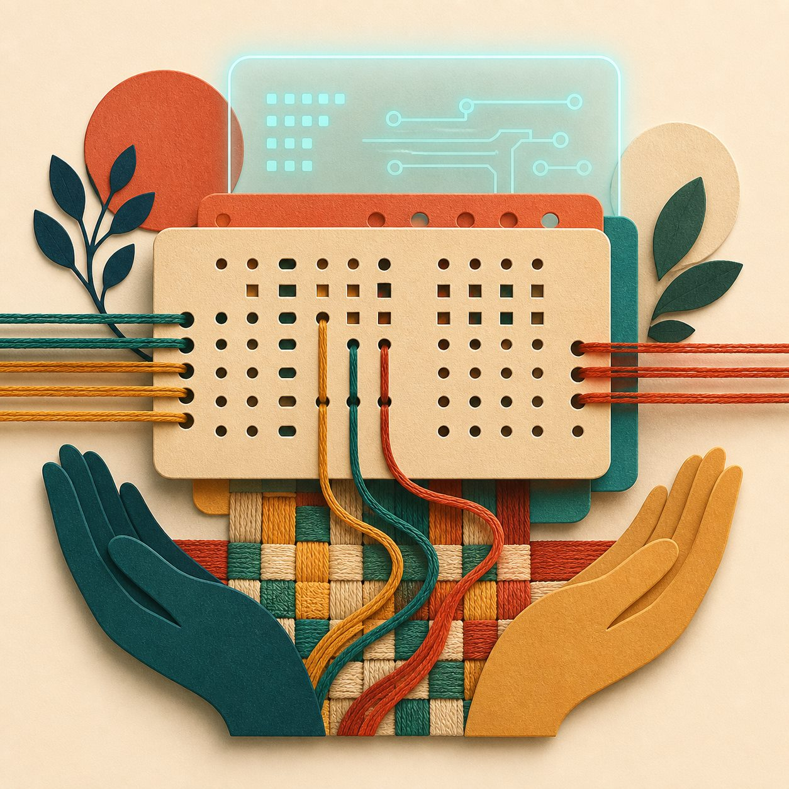
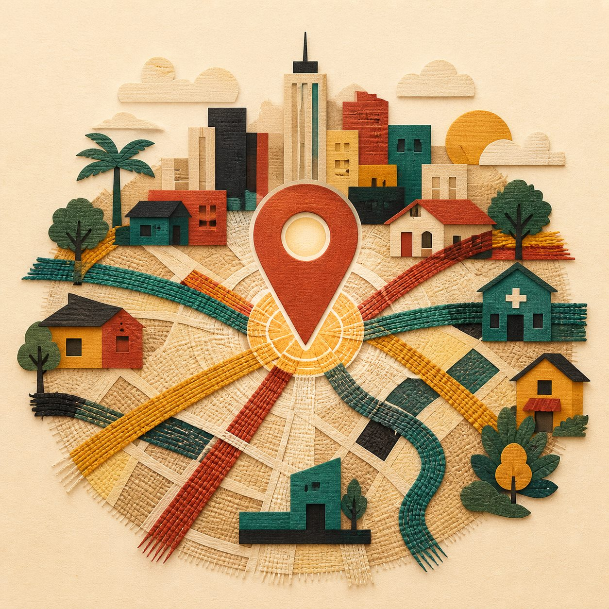
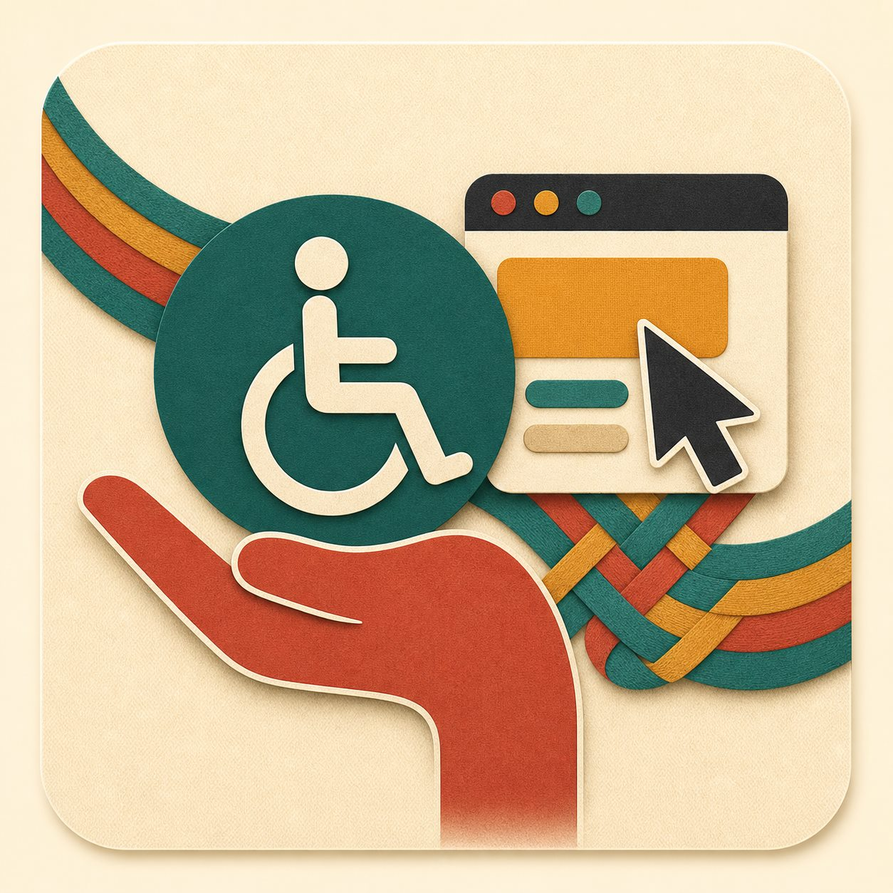
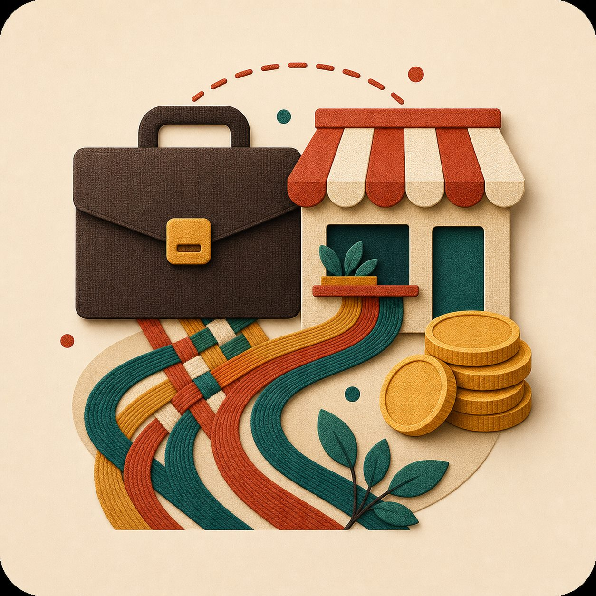
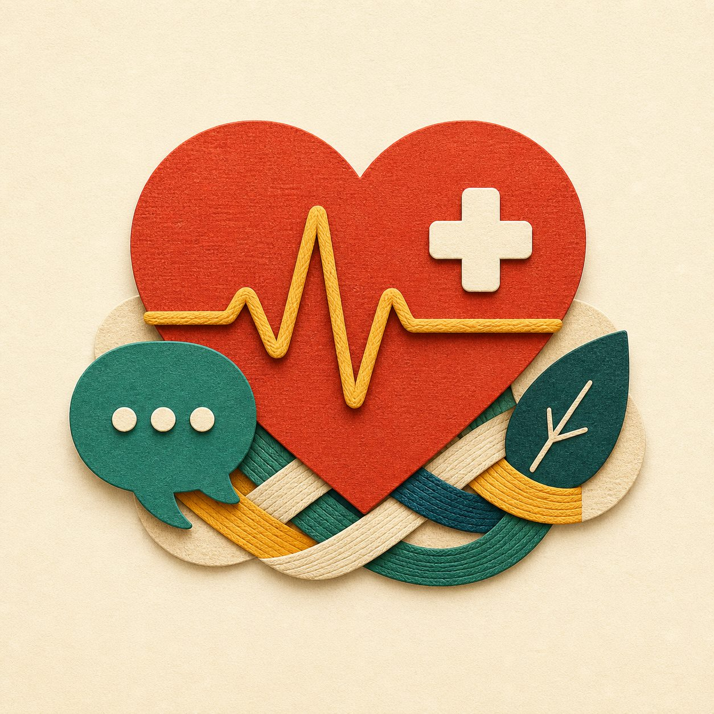
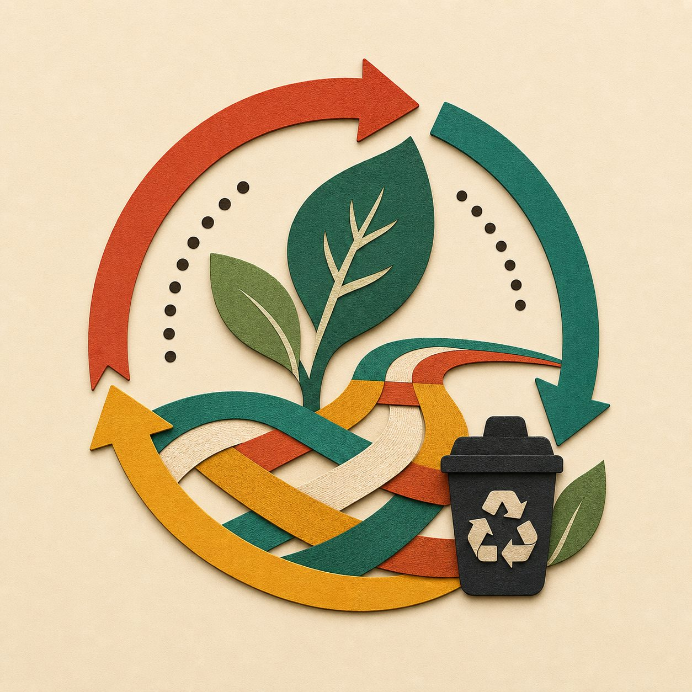
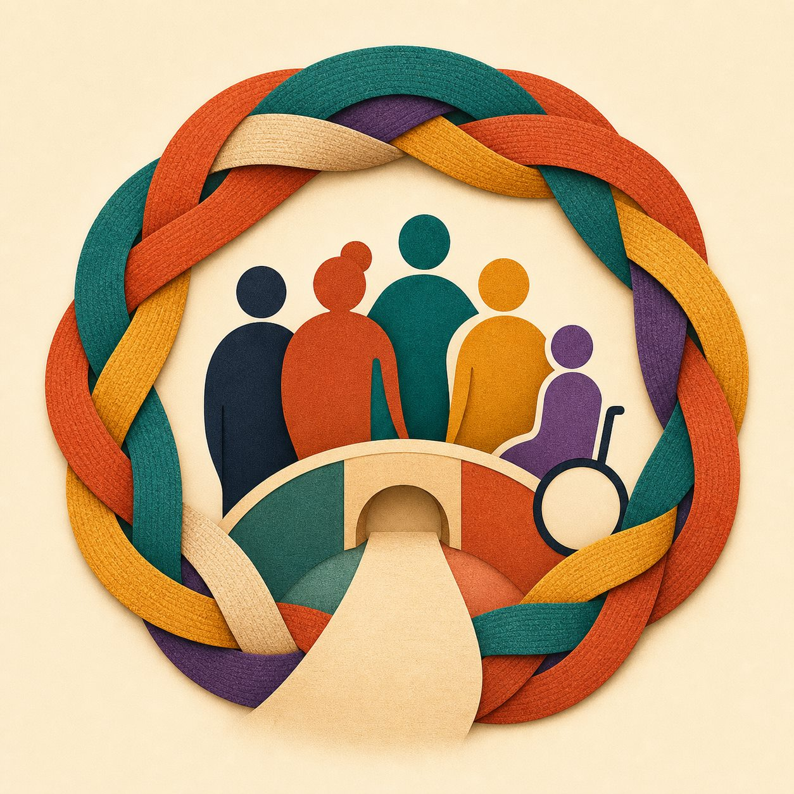

Colaboração
Um fio sozinho é frágil. Uma trama coletiva sustenta ideias maiores.
6 e 7 de novembro - Senac Ribeirão Preto
Uma maratona para unir cursos, trajetórias e ideias em soluções reais para a comunidade. Não é apenas sobre código. É sobre criar impacto.

Uma metáfora para entrelaçar saberes, tecnologia e impacto social.
Oficinas, repertório e conexão para preparar as equipes.
Maratona, mentoria, entrega dos projetos e pitch final.
Caminhos conectados a dores reais de Ribeirão Preto.
Formações mistas para entrelaçar diferentes saberes.
Conceito
O tear conecta artesanato, programação e colaboração. No Hackathon, ele representa a união entre estudantes, mentores e áreas de conhecimento para criar soluções inclusivas, viáveis e transformadoras.

Um fio sozinho é frágil. Uma trama coletiva sustenta ideias maiores.

Código é ferramenta. O centro da proposta são as pessoas impactadas.

Os desafios partem de dores reais de Ribeirão Preto e região.
Cinco caminhos

Autonomia, recursos assistivos e acesso à informação.

Conexão com o mercado, MEIs e educação financeira.

Prevenção, saúde mental e fluxos de acolhimento.

Economia circular, descarte correto e desperdício zero.

Acolhimento, direitos, empregabilidade e respeito.
Personalidade
Fios, cartões perfurados, mapas de dor, protótipos e apresentações aparecem como partes de uma mesma experiência: pegar uma ideia solta e transformá-la em solução com forma, valor e impacto.
Dois dias
Oficinas, abertura, formação de repertório, networking e consolidação das equipes.
Mentorias, protótipo, modelo de viabilidade, apresentação de impacto e pitch final.
Avaliação